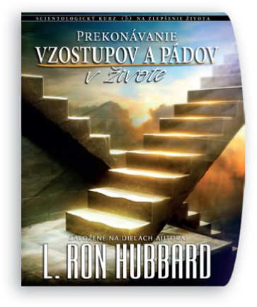
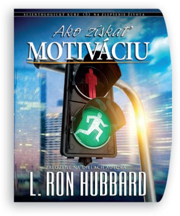
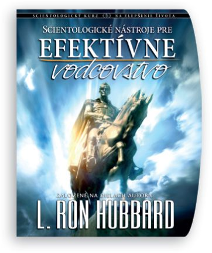
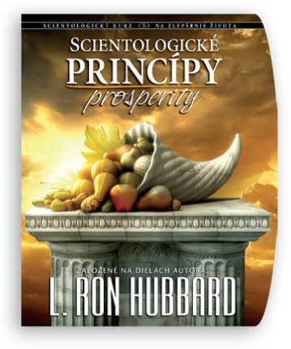

Řada krátkých, praktických kurzů rozdělených do pěti oblastí. Každý Vám dá konkrétní nástroje, které použijete hned — vyberte si oblast, která je Vám právě teď nejblíž.
Etika a přežití · Cíle a účely · Přežití a prosperita · Manželství · Děti



